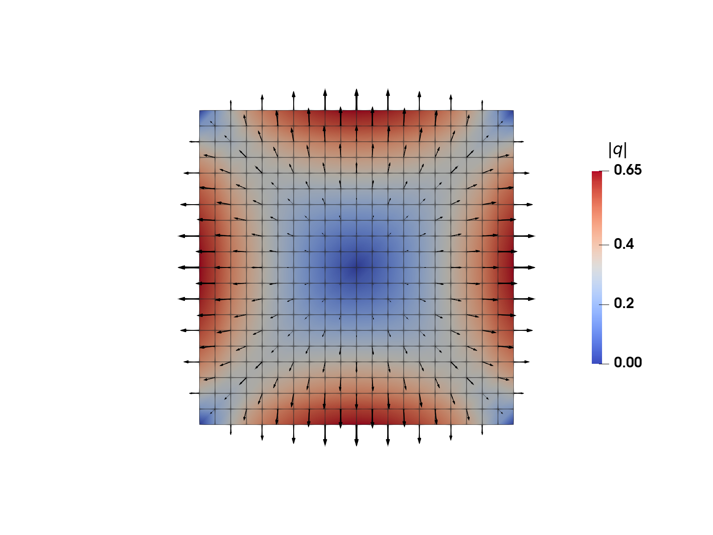
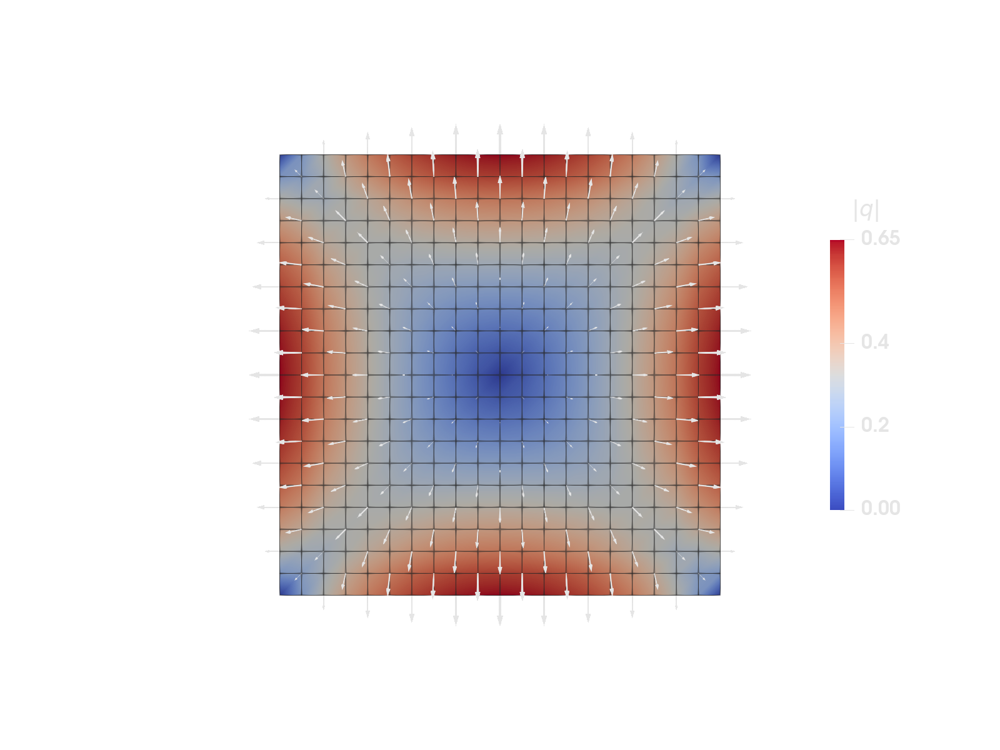
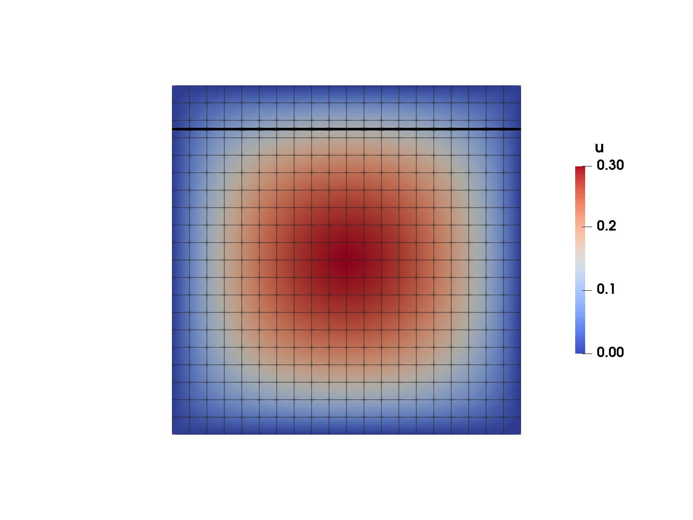
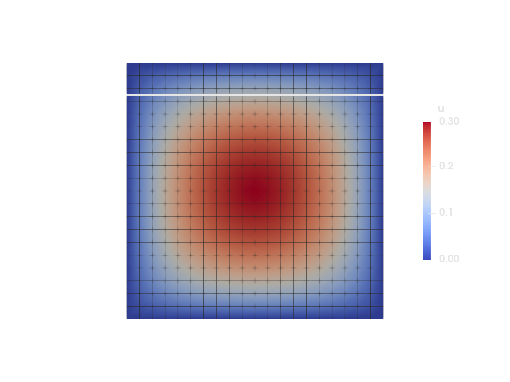
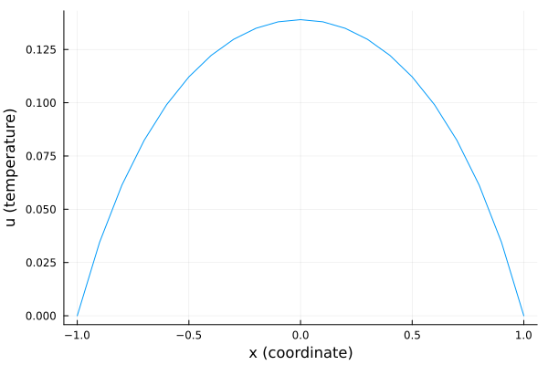
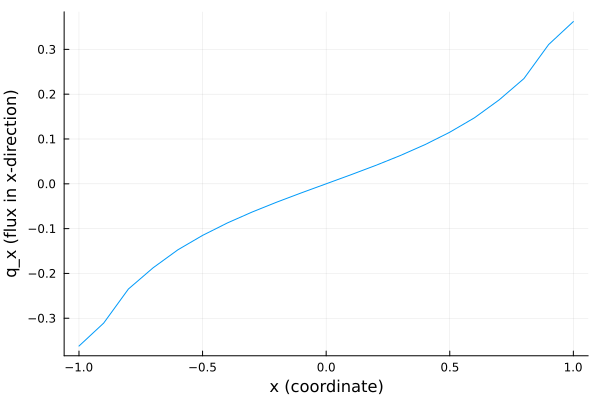

Postprocessing and visualization


Figure 1: Heat flux computed from the solution to the heat equation on the unit square, coloured by magnitude with arrows for the direction. See the previous example: Heat equation.
This example is also available as a Jupyter notebook: postprocessing.ipynb.
Introduction
After running a simulation, we usually want to postprocess and visualize the results in different ways. Ferrite provides several tools to facilitate these tasks:
- L2 projection of (discrete) data onto FE interpolations using the
L2Projector - Evaluation of fields (solutions, projections, etc) at arbitrary, user-defined, points using the
PointEvalHandler - Builtin functionality for exporting data (solutions, cell data, projections, etc) to the VTK format
- Makie.jl based plotting using FerriteViz.jl
This how-to demonstrates the VTK export, the L2Projector for projecting discrete quadrature point data onto a continuous FE interpolation, and the PointEvalHandler for evaluating the FE solution, and the projection, along a user-defined cut line through the domain.
A common assumption is that the numbering of degrees of freedom matches the numbering of the nodes in the grid. This is NOT the case in Ferrite. If the available tools don't suit your needs and you decide to "roll your own" visualization you need to be aware of this and take it into account. For the specific case of evaluating the solution at the grid nodes you can use evaluate_at_grid_nodes.
This example continues from the Heat equation example, where the temperature field was determined on a square domain. In this example, we first compute the heat flux in each integration point (based on the solved temperature field) and then we do an L2-projection of the fluxes to the nodes of the mesh. By doing this, we can more easily visualize integration point quantities. Finally, we visualize the temperature field and the heat fluxes along a cut-line.
The L2-projection is defined as follows: Find projection $q(\boldsymbol{x}) \in U_h(\Omega)$ such that
\[\int v q \ \mathrm{d}\Omega = \int v d \ \mathrm{d}\Omega \quad \forall v \in U_h(\Omega),\]
where $d$ is the quadrature data to project. Since the flux is a vector the projection function will be solved with multiple right hand sides, e.g. with $d = q_x$ and $d = q_y$ for this 2D problem. In this example, we use standard Lagrange interpolations, and the finite element space $U_h$ is then a subset of the $H^1$ space (continuous functions).
Ferrite has functionality for doing much of this automatically, as displayed in the code below. In particular L2Projector for assembling the left hand side, and project for assembling the right hand sides and solving for the projection.
Implementation
Start by simply running the Heat equation example to solve the problem
include("../tutorials/heat_equation.jl");Next we define a function that computes the heat flux for each integration point in the domain. Fourier's law is adopted, where the conductivity tensor is assumed to be isotropic with unit conductivity $\lambda = 1 ⇒ q = - \nabla u$, where $u$ is the temperature.
function compute_heat_fluxes(cellvalues::CellValues, dh::DofHandler, a::AbstractVector{T}) where {T} nqp = getnquadpoints(cellvalues) # Allocate storage for the fluxes to store q = [Vec{2, T}[] for _ in 1:getncells(dh.grid)] for cell in CellIterator(dh) q_cell = q[cellid(cell)] aᵉ = a[celldofs(cell)] reinit!(cellvalues, cell) for q_point in 1:nqp q_qp = - function_gradient(cellvalues, q_point, aᵉ) push!(q_cell, q_qp) end end return qendNow call the function to get all the fluxes.
q_gp = compute_heat_fluxes(cellvalues, dh, u);Next, create an L2Projector using the same interpolation as was used to approximate the temperature field. On instantiation, the projector assembles the coefficient matrix M and computes the Cholesky factorization of it. By doing so, the projector can be reused without having to invert M every time.
projector = L2Projector(ip, grid);Project the integration point values to the nodal values
q_projected = project(projector, q_gp, qr);Exporting to VTK
To visualize the heat flux, we export the projected field q_projected to a VTK-file, which can be viewed in e.g. ParaView. The result is also visualized in Figure 1.
VTKGridFile("heat_equation_flux", grid) do vtk write_projection(vtk, projector, q_projected, "q")end;Point evaluation


Figure 2: The temperature field, with the cut line along which we want to compute the temperature and heat flux drawn on top.
Consider a cut-line through the domain like the one in Figure 2 above. We will evaluate the temperature and the heat flux distribution along a horizontal line.
points = [Vec((x, 0.75)) for x in range(-1.0, 1.0, length = 101)];First, we need to generate a PointEvalHandler. This will find and store the cells containing the input points.
ph = PointEvalHandler(grid, points);After the L2-Projection, the heat fluxes q_projected are stored in the DoF-ordering determined by the projector's internal DoFHandler, so to evaluate the flux q at our points we give the PointEvalHandler, the L2Projector and the values q_projected.
q_points = evaluate_at_points(ph, projector, q_projected);We can also extract the field values, here the temperature, right away from the result vector of the simulation, that is stored in u. These values are stored in the order of our initial DofHandler so the input is now the PointEvalHandler, the original DofHandler, the dof-vector u, and (optionally for single-field problems) the name of the field.
u_points = evaluate_at_points(ph, dh, u, :u);Now, we can plot the temperature and flux values with the help of any plotting library, e.g. Plots.jl. To do this, we need to import the package:
import PlotsFirstly, we are going to plot the temperature values along the given line.
Plots.plot(getindex.(points, 1), u_points, xlabel = "x (coordinate)", ylabel = "u (temperature)", label = nothing)
Figure 3: Temperature along the cut line from Figure 2.
Secondly, the horizontal heat flux (i.e. the first component of the heat flux vector) is plotted.
Plots.plot(getindex.(points, 1), getindex.(q_points, 1), xlabel = "x (coordinate)", ylabel = "q_x (flux in x-direction)", label = nothing)
Figure 4: $x$-component of the flux along the cut line from Figure 2.
Plain program
Here follows a version of the program without any comments. The file is also available here: postprocessing.jl.
include("../tutorials/heat_equation.jl");function compute_heat_fluxes(cellvalues::CellValues, dh::DofHandler, a::AbstractVector{T}) where {T} nqp = getnquadpoints(cellvalues) # Allocate storage for the fluxes to store q = [Vec{2, T}[] for _ in 1:getncells(dh.grid)] for cell in CellIterator(dh) q_cell = q[cellid(cell)] aᵉ = a[celldofs(cell)] reinit!(cellvalues, cell) for q_point in 1:nqp q_qp = - function_gradient(cellvalues, q_point, aᵉ) push!(q_cell, q_qp) end end return qendq_gp = compute_heat_fluxes(cellvalues, dh, u);projector = L2Projector(ip, grid);q_projected = project(projector, q_gp, qr);VTKGridFile("heat_equation_flux", grid) do vtk write_projection(vtk, projector, q_projected, "q")end;points = [Vec((x, 0.75)) for x in range(-1.0, 1.0, length = 101)];ph = PointEvalHandler(grid, points);q_points = evaluate_at_points(ph, projector, q_projected);u_points = evaluate_at_points(ph, dh, u, :u);import PlotsPlots.plot(getindex.(points, 1), u_points, xlabel = "x (coordinate)", ylabel = "u (temperature)", label = nothing)Plots.plot(getindex.(points, 1), getindex.(q_points, 1), xlabel = "x (coordinate)", ylabel = "q_x (flux in x-direction)", label = nothing)This page was generated using Literate.jl.